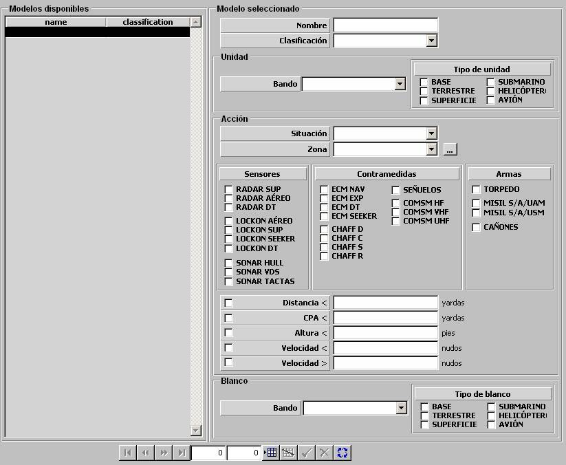

Condicionantes

Mediante esta tabla se parametrizan los Condicionantes ROE. Un condicionante se activa (cumple) si una Unidad efectúa una Acción sobre otra unidad (Blanco).
Las Unidades que provocan que se active el condicionante son especificadas mediante filtros por Bando, Tipo y Zona en la que se encuentran:
Bando: Este parámetro determina el bando al que deben pertenecer las unidades para que provoquen que se active el condicionante. Puede tomar los siguientes valores:
Tipo: Este parámetro determina el tipo de unidad del que deben ser las unidades para que provoquen que se active el condicionante. Puede tomar los siguientes valores:
Las Acciones que provocan que se active el condicionante son especificadas parametrizando:
Para que se considere que se está efectuando la Acción deberán cumplirse TODAS las condiciones seleccionadas.
Los Blancos contra los que se efectúa la Acción, se especifican parametrizando:
Ubicación Geográfica:
Situación: Este parámetro determina la condición sobre la Zona ROE seleccionada que deben cumplir las unidades para que provoquen que se active el condicionante. Puede tomar los siguientes valores:
Zona: Este parámetro determina la zona geográfica sobre la que se comprueba la Situación de las unidades. Podrán ser seleccionadas de entre la Zonas ROE definidas. Mediante el botón de etiqueta “...” se abre el diálogo para definir estas zonas. Ver apartado Preparación – Modelos Básicos – ROE – Zonas ROE.
Empleo de Sistemas:
Sistema: Este parámetro determina el empleo de sistema que deben efectuar las unidades para que provoquen que se active el condicionante. Puede tomar los siguientes valores:
Sensores
|
Contramedidas
|
Armas
|
Condiciones Cinemáticas:
Distancia <: Este parámetro determina el límite de distancia de la unidad al blanco por debajo del cual se considera que está efectuando la Acción.
Unidades: yardas
Rango: 0 – 999999
CPA <: Este parámetro determina el límite de CPA de la unidad sobre el blanco por debajo del cual se considera que está efectuando la Acción.
Unidades: yardas
Rango: 0 – 999999
Altura <: Este parámetro determina el límite de altura de la unidad por debajo del cual se considera que está efectuando la Acción.
Unidades: pies
Rango: 0 – 99999
Velocidad <: Este parámetro determina el límite de velocidad de la unidad por debajo del cual se considera que está efectuando la Acción.
Unidades: nudos
Rango: 0 – 9999,9
Velocidad >: Este parámetro determina el límite de velocidad de la unidad por encima del cual se considera que está efectuando la Acción.
Unidades: nudos
Rango: 0 – 9999,9
Filtros para Blancos:
Bando: Este parámetro determina el bando al que deben pertenecer los blancos para que provoquen que se active el condicionante. Puede tomar los siguientes valores:
Tipo: Este parámetro determina el tipo de unidad del que deben ser los blancos para que provoquen que se active el condicionante. Puede tomar los siguientes valores: